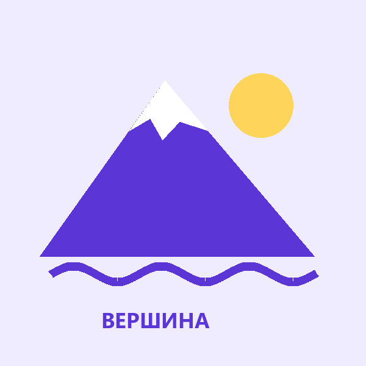
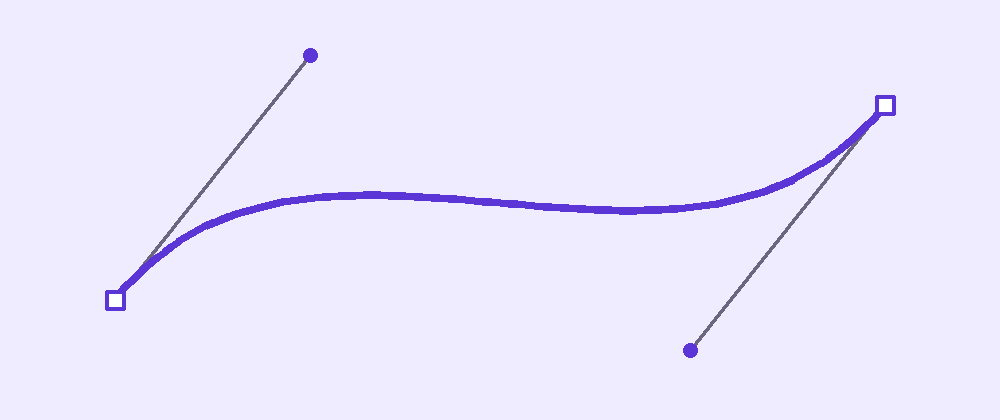
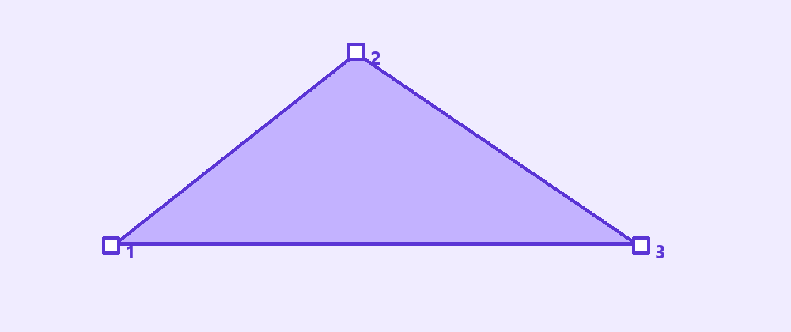

Перо и редактирование вектора
Нарисуй собственный стикер по точкам: попробуй прямые, плавные линии и аккуратный замкнутый контур.
Перейти к заданию ↗
Перед новой практикой
Три небольших вопроса по предыдущему уроку. Выбери ответ и нажми «Проверить».
Клавиши для практики
Сочетания для Windows. Переключи клавиатуру на английскую раскладку. Перед командой заверши ввод текста.
Контур из точек
Pen (перо) создаёт векторный контур. Каждый щелчок добавляет точку, отрезок соединяет её с предыдущей. Нажми на первую точку, чтобы замкнуть контур. Для тренировки нарисуй треугольную вершину из трёх точек.

Три точки образуют замкнутый контур вершины.
Попробуй в Figma
Плавная линия
Чтобы создать изгиб, поставь точку нажатием с протягиванием. Появятся направляющие: их направление и длина меняют изгиб линии. Для простого листа достаточно двух крайних точек с направляющими. Меньше точек обычно означает более спокойный контур.

Направляющие управляют изгибом между точками.
Попробуй в Figma
Исправить форму
Выдели вектор и нажми Enter. Теперь можно выбирать отдельные точки и передвигать их. Не добавляй новую точку, если форму можно исправить существующей. После редактирования нажми Esc и проверь изображение целиком, а затем приблизь его.

Образец содержит отдельные простые контуры горы, солнца и волны.
Попробуй в Figma
Стикер «Вершина»
Создай стикер «Вершина», «Лист» или «Волна». Образец помогает оценить аккуратность, а форму и цвета выбери самостоятельно.
В Figma нажми на название файла и выбери Duplicate to drafts (создать копию в черновиках). Работай в собственной копии. Инструкции и образцы заблокированы.
Проверь свою работу
Отмечай пункты после проверки в Figma.
Если закончил раньше
Сделай вторую версию стикера, изменив только точки и направляющие. Сохрани первоначальный вариант рядом.